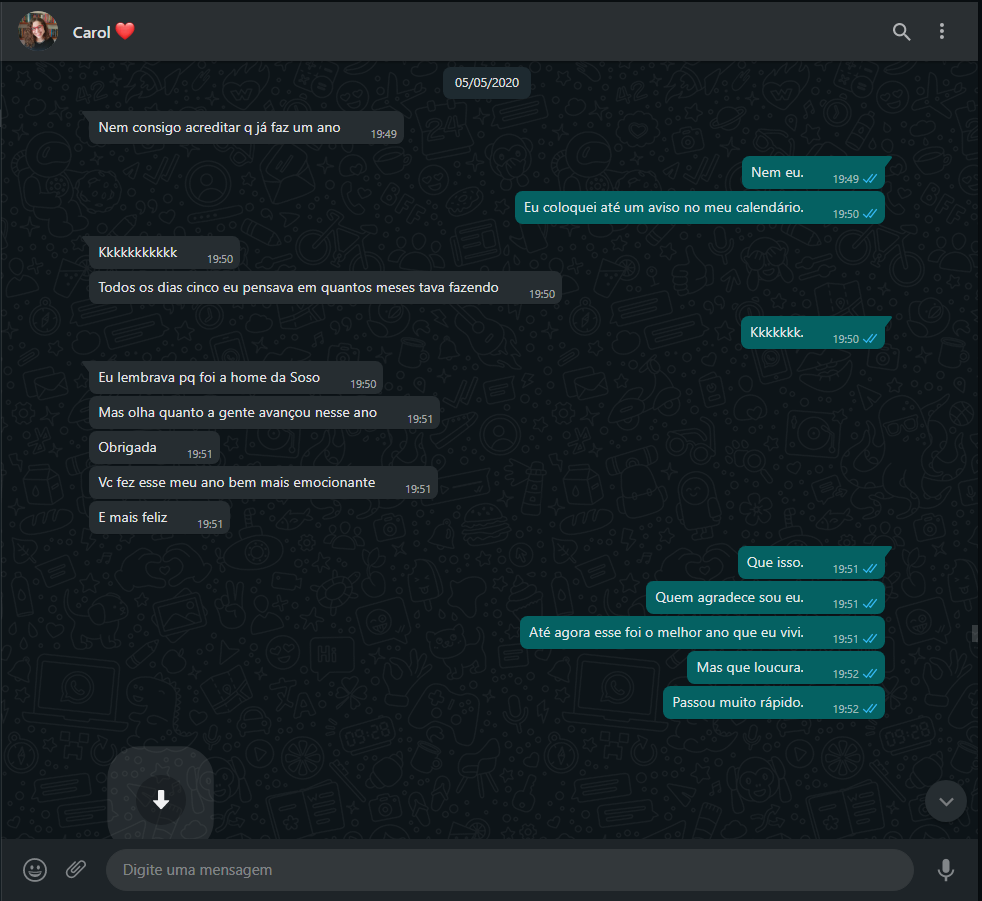

-
O Começo de Tudo!
Março 20, 2016Aqui foi onde tudo começou! Tudo que eu tinha era um sonho e a uma oração: Que Deus me mostrasse a pessoa que ele preparou para mim.
Eu não tinha ideia de quem seria, mas mesmo assim escolhi a pessoa mais inalcançável, pensando que fosse só algo passageiro.
-
The First Move
Novembro 01, 2018Ahhhh, aqui foi quando eu te chamei pra dança de roda! Nem rolou nada direito né, mas só de eu ter te chamado já foi um grande passo pra mim na época kkkk.
-
Retribuição
Dezembro 01, 2018Foi aqui que a coisa ficou séria tp. Aparentemente vc começou a gostar de mim perto dessa época aqui, ou seja, o inimaginável começou a acontecer.
-
A Casa da Montanha
Dezembro 15, 2018Esse teatro foi muito bom! Além de todas as cenas, músicas e efeitos, dava pra ver que tinha alguma coisa de diferente que só eu via naquele palco.
-
The Move
Maio 05, 2019E assim como uma cobra dá o bote, eu arrisquei tudo o que tinha em uma frase. Se eu tinha alguma coisa naquela hora, foi coragem e fé.
Ainda não se sabe o porque, mas as palavras 'Eu tamb√©m gosto de voc√™' ecoam na minha cabe√ßa at√© hoje. üòÖ
-
Ao Infinito e Além
Julho 18, 2019Mesmo já tendo se passado dois meses, as emoções ainda estavam a flor da pele.
Mas com você do outro lado do oceano, passei pelo maior aprendizado da minha vida: A minha alegria é a sua alegria! Se você estava feliz enquanto viajava pela europa afora, eu também estava feliz, só que a distância!
-
Last Dance
Outubro 14, 2019
E mais um acampamento chega, e enquanto Deus mexe em seus pauzinhos, as cortinas do nosso 'relacionamento' se abrem e o show começa.
E o que não faltou foi reação da plateia, até pq eles faziam parte da mesma peça né kkk.
-
Princess Party
Março 08, 2020Esse dia foi bem +/- kkkk. Ficou gelado e eu não tinha blusa de frio, a nossa foto não ficou a das melhores e eu tava meio pra baixo tbm.
Mas até hj esse dia não saiu da minha cabeça, pq foi a primeira vez que a gente tinha ficado tão perto sabendo o que cada um sentia. Dava até pra sentir um clima diferente.
-
1 Full, 1 Empty
Maio 05, 2020É isso, temos oficialmente UM ano de pura 'enrolação'. Foram incontáveis aúdio, diversas mensagens e indescritiveis emoções a cada notificação de mensagem que chegava.
Foi rápido como uma estrela cadente, mas marcante como um meteoro. Infelizmente a pandemia pegou em cheio daqui pra frente, e só vamos ter um acontecimento daqui a um ano, que vai pagar o 'ano' perdido
-
Tipo UP, Altas Aventuras
Maio 05, 2021Foi aqui que o patrão ficou louco, e vc tbm aparentemente. Passou mais um ano de conversa e oração, pq quem se prepara não passa fome aparentemente kkk
Eu já não aguentava mais te enrolar, e depois de ter conversado com seu pai em Dezembro, coloquei 'O Plano' em ação. Não sei o que aconteceu naquela noite, mas como a gente conversou por 2 horas e ninguém desistiu, o buque foi entreque a dama, que virou princesa logo em seguida.
Depois disso eu nunca mais fui o mesmo, e como já diria Barney Stinson: 'That's the dream!'
-
First Date, Like Birthday Date
Junho 05, 2021Nosso primeiro aniversário! Meu Deus, mas já?
Confesso que eu não estava muito animado para ir na praça da liberdade, mas você me mostrou que o que realmente importava era eu e você estarmos juntinhos.
-
Desenventuras Em Séries Semanais
Junho 22, 2021E lá vem você mudando meus gostos mais uma vez! Do nada me mostrou uma série que eu nunca tinha visto!
Com a minha ansiedade no auge de sua carreira e a falta de familiaridade com Plot Twist's em série fizeram com que os primeiros episódios fossem quase que uma tortura! Mas não demorou para que eu me envolves-se com a série de um modo que a estoria não sai mais da minha cabeça (Eu lembro de tudo até hoje kkkk).
-
The Daters, Second Act
Julho 05, 2021Nosso segundo aniversário chegou!
Foi no BH dessa vez, mas ainda foi uma grande conversa. Milhões de assuntos iam e vinham, enquanto nós explorávamos todos os cantos do shopping de forma desordenada e aleatória.
-
Paper's, please
Agosto 05, 2021Dessa vez eu aproveitei o aweekend pra fazer o marketing kkk.
Confesso que não tinha a intenção de escrever nada de importante no correio elegante não, mas quando eu fui ver já tinha escrito na face do papel toda e desenhado um coração meio torto.
Obs: Melhor do que escrever com todo o meu coração, foi ouvir o seu áudio de resposta. O fato de você ter emocionado significou uma vitória para mim.
-
Picnic
Setembro 05, 2021Tá, esse dia foi maravilhoso.
Sempre que eu lembro desse dia, vem três coisas na minha cabeça: Eu tava morto de cansaço, o cookie estava uma delícia e deitar naquele pano enquanto olhava para o ceu e conversava com minha dama de honra foi uma sensação unica, literalmente.
Consegui até me abrir pra você sobre algo que eu não contei a ninguém até hoje! Se eu pudesse vender tudo o que eu tenho para ter aquele dia denovo, eu já estava morando na rua a décadas.
-
Hearing Your Thougths
Outubro 03, 2021Nosso primeiro filme juntinhos!
Outra coisa que eu queria muito era misturar as duas coisas que eu mais gosto e ver qual era o sabor. Você + Cinema tem um gosto de satisfação, alegria e vontade de fazer dnv kkkk.
Até hoje eu não consigo esquecer a musica que eles cantam em dueto, dá até um arrepio.
-
Pizza Time, But Not For Me
Outubro 31, 2021O rodízio de pizza mais caro da minha vida kkkk.
Sinceramente, se você não tivesse ido, a unica coisa que eu iria ter de lembrança é que meus conflitos emocionais bloquearam toda a minha fome.
O que mais marcou foi ter alguém do meu lado segurando minha mão bem forte, sem querer largar.
Obs: Se você tá saindo comigo sou eu que pago tá kkkk.
-
The End Of The Beginning
Novembro 05, 2021É isso, acabou aqui.
Minha bola de cristal tá desatualizada, então ela só vai até hoje. Mas com o tempo quem sabe eu atualizo isso daqui?
Ahhh, acho que vou deixar assim pra sempre, não quero estragar a essência desse presente n.